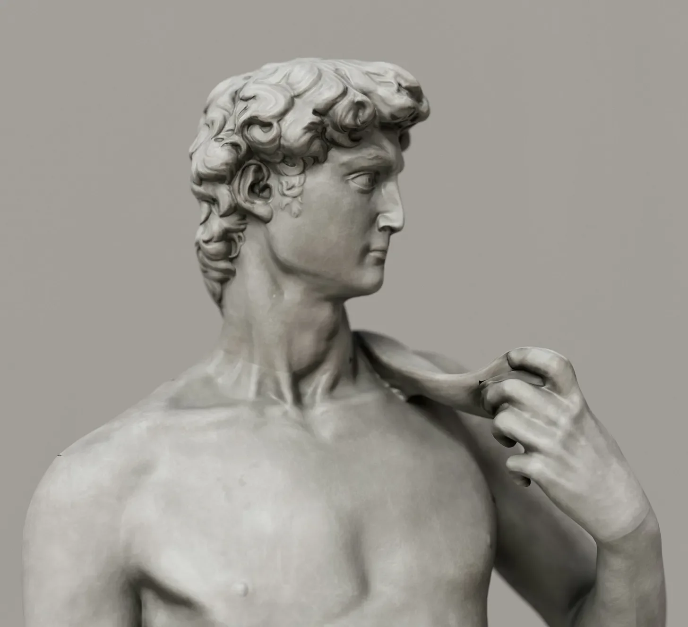

갤러리아 델 아카데미아의 조용한 복도에서, 걸작들이 잠들고 관광객들의 발자취가 오래전에 사라진 곳에서, 특별한 무언가가 움직이기 시작했습니다.
[In the hushed halls of the Galleria dell'Accademia, where masterpieces slumbered and tourists’ footsteps had long faded, something extraordinary stirred.]
시계가 자정을 알리자, 모든 작품 중에서 가장 유명한 작품인 다비드상에서 희미한 딱딱거리는 소리가 복도에 울려 퍼졌습니다.
[As the clock struck midnight, a faint crackling sound echoed through the chamber, originating from the most famous resident of all - the statue of David.]
대리석 거인의 손가락이 움찔거리더니, 곧 구부러졌습니다. 그의 가슴은 깊은 숨을 들이쉬며 팽창했고, 갑자기 수 세기 동안 무표정하게 응시했던 그 눈이 생기를 되찾았습니다. 미켈란젤로의 위대한 걸작, 다비드가 깨어났습니다.
[The marble giant’s fingers twitched, then flexed. His chest expanded with a deep breath, and suddenly, those eyes that had gazed impassively for centuries blinked to life. David, Michelangelo’s magnum opus, was awake.]
“맙소사,” 그는 오랫동안 사용하지 않아 거친 목소리로 중얼거렸습니다. “500년 동안 가만히 서 있으니 관절이 엉망이 되는군.”
[“Mamma mia,” he muttered, his voice rough from disuse. “Five hundred years of standing still really does a number on one’s joints.”]
놀랍도록 우아하게, 17피트짜리 대리석 조각상 다비드는 받침대에서 내려왔습니다. 그가 첫 번째 해야 할 일은? 너무나 필요했던 스트레칭.
[With surprising grace for a 17-foot tall marble sculpture, David stepped down from his pedestal. His first order of business? A much-needed stretch.]
“자, 그럼,” 그는 어두운 갤러리를 둘러보며 혼잣말을 했습니다. “르네상스 시대의 남자는 21세기에 무엇을 하며 즐거울까?”
[“Now then,” he mused, glancing around the darkened gallery, “what does a Renaissance man do for fun in the 21st century?”]
잠자는 돌 동료들을 방해하지 않으려 조심하며, 다비드는 (거대한 대리석 조각상이 할 수 있는 한 최대한) 발끝으로 출구를 향해 걸어갔습니다. 보안 시스템은 그의 전설적인 교활함에 상대가 되지 않았고, 곧 그는 달빛이 비추는 피렌체 거리에 서 있었습니다.
[Careful not to disturb his sleeping stone brethren, David tiptoed (as much as a colossal marble statue can tiptoe) towards the exit. The security system proved no match for his legendary cunning, and soon he found himself on the moonlit streets of Florence.]
그의 시대 이후로 도시는 변했지만, 아르노 강은 여전히 흐르고 있었고, 두오모의 돔은 여전히 하늘을 뚫고 있었습니다. 다비드는 깊게 숨을 들이마시며 늦은 밤 피자 가게와 피어나는 재스민 향기를 음미했습니다.
[The city had changed since his day, but the Arno still flowed, and the dome of the Duomo still pierced the sky. David inhaled deeply, savoring the scent of late-night pizzerias and blooming jasmine.]
“우선,” 그는 특별히 누구에게 하는 말 없이 선언했습니다. “옷을 좀 찾아야겠어. 너무 오랫동안 벌거벗고 있었어.”
[“First things first,” he declared to no one in particular, “I simply must find some clothes. I’ve been naked for far too long.”]
옷을 찾기 위한 그의 탐험은 24시간 기념품 가게로 이어졌고, 그는 그곳에서 가장 큰 “나는 피렌체를 ❤️” 티셔츠와 바지를 입어 봤습니다. 졸린 눈을 비비며 자신이 꿈을 꾸고 있다고 확신한 가게 주인은 다비드가 500년 된 플로린으로 지불하려는 시도를 그냥 손짓으로 넘겼습니다.
[His quest for attire led him to a 24-hour souvenir shop, where he squeezed into the largest “I ❤️ Firenze” t-shirt and pants they had. The shopkeeper, bleary-eyed and convinced he was dreaming, simply waved away David’s attempt to pay with a 500-year-old florin.]
옷을 입고 모험을 떠날 준비를 마친 다비드는 현대 피렌체가 제공하는 모든 것을 경험하기 위해 출발했습니다. 그는 젤라토를 맛보고 (“천국의 맛!”), 당황한 관광객의 휴대폰으로 셀카를 찍으려고 시도했고 (“왜 나는 마법 거울에 나오지 않지?”), 심지어 늦은 밤 바에서 노래방에서 노래를 불러보기도 했습니다(“오 솔레 미오"는 그렇게… 조각상처럼 들린 적이 없었다).
[Dressed and ready for adventure, David set off to experience all that modern Florence had to offer. He sampled gelato ("Heavenly!”), attempted to take a selfie with a bewildered tourist’s phone (“Why am I not in the magic mirror?”), and even tried his hand at karaoke in a late-night bar (“O sole mio” had never sounded so… statuesque).]
새벽의 첫 빛이 하늘을 물들이기 시작하자 다비드는 자신의 시간이 얼마 남지 않았다는 것을 알았습니다. 아쉬운 한숨을 쉬며 그는 갤러리로 돌아갔고, 첫 번째 얼리 버드 관광객들이 도착하기 직전에 안으로 들어갔습니다.
[As dawn’s first light began to paint the sky, David knew his time was short. With a wistful sigh, he made his way back to the gallery, slipping inside just as the first early-bird tourists arrived.]
받침대 위로 돌아온 그는 다시 한번 그의 유명한 포즈를 취했습니다. 하지만 이제 그의 입술에는 비밀스러운 미소가 걸려 있었고, 완벽하게 조각된 복근에는 젤라토 얼룩이 묻어 있었습니다 - 그의 자유로운 밤에 대한 숨겨진 증거.
[Back on his pedestal, he struck his famous pose once more. But now, a secret smile played on his lips, and a gelato stain adorned his perfectly sculpted abs - a hidden testament to his night of freedom.]
관람객들이 그의 영원한 아름다움에 감탄하며 줄지어 들어오자, 다비드는 속으로 생각했습니다. “다음 세기에 또 만날까?” 그리고 그렇게 그는 노래방과 딸기 젤라토의 맛을 꿈꾸며 또 다른 긴 잠에 빠져들었습니다.
[As visitors filed in, marveling at his timeless beauty, David thought to himself, “Same time next century?” And with that, he settled in for another long nap, dreaming of karaoke and the taste of strawberry gelato.]